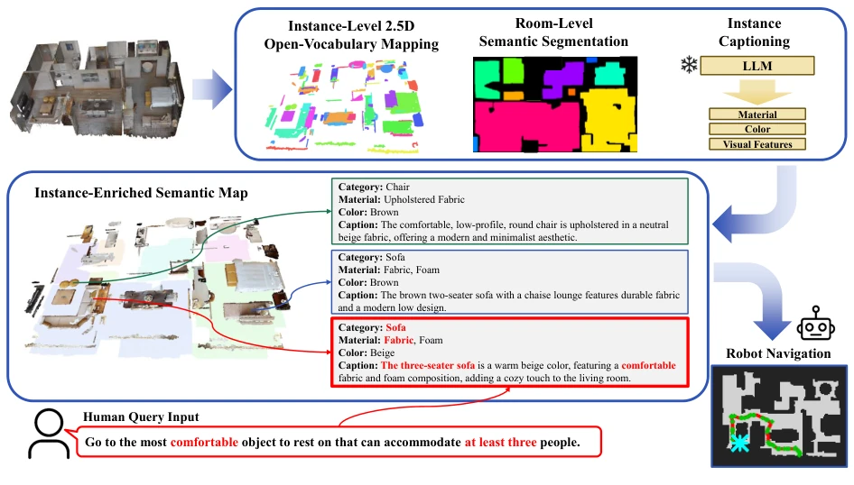
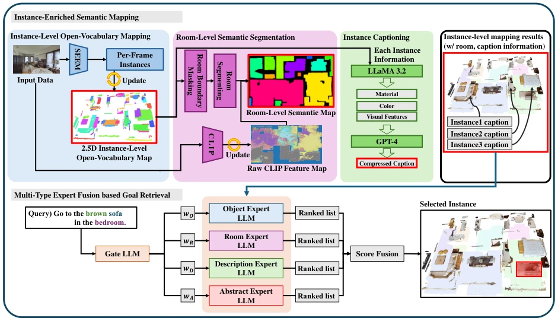
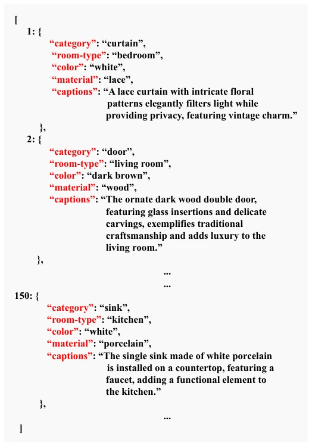
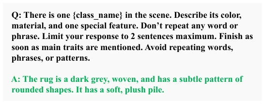
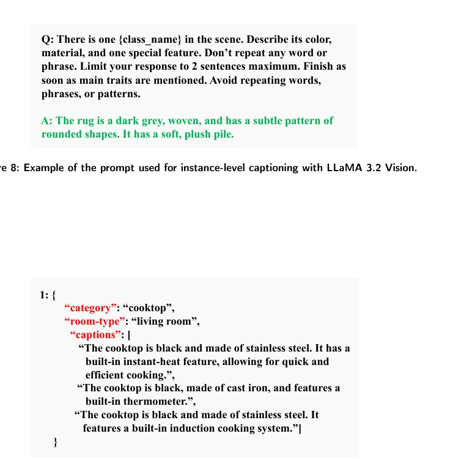
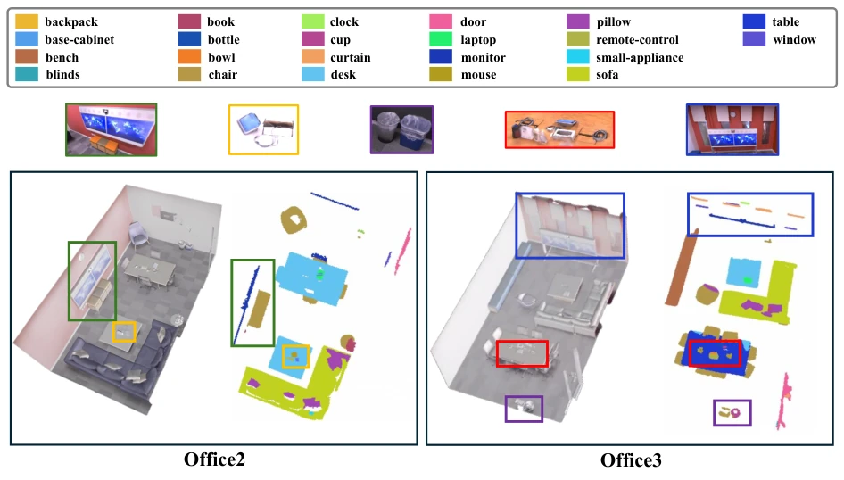
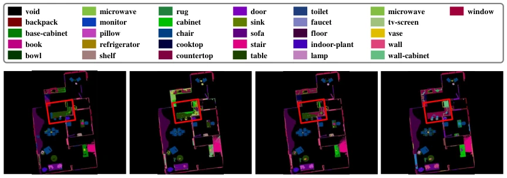
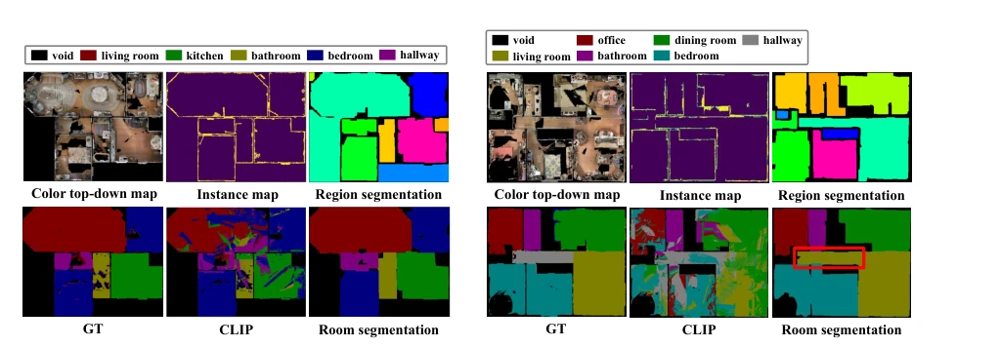
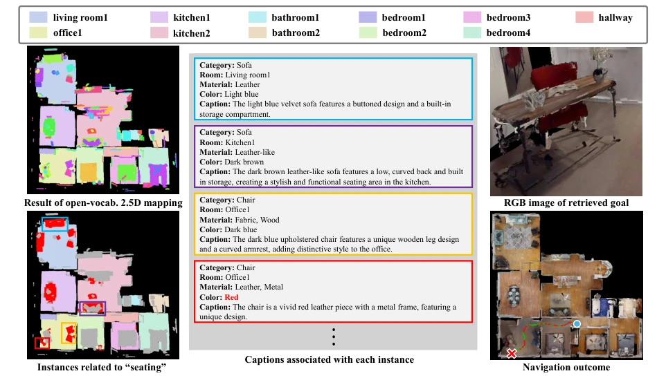

This paper introduces a "2.5D semantic map" to address VLN challenges. Although 3D scene graphs (e.g., HOV-SG) are information-complete but storage-intensive, 2D maps (e.g., VLMaps) are space-efficient but fail to distinguish upper and lower layers. The authors use SEEM for instance segmentation, create a grid capable of storing multi-layer instances, and add LLMs for descriptions, effectively forcing together "spatial awareness" and "semantics". The MTEFR module uses expert routing to handle different queries, which is quite sophisticated. But do not get too excited; this system still runs in the Habitat simulator, and scalability for real robot deployment remains a challenge. Moreover, Figure 5 itself admits occasional over-segmentation, raising doubts about stability. The 96% storage savings are indeed attractive, but if deployed on real machines, who pays for LLM inference latency and hallucination risks? Overall, it is a decent "paper" solution within the simulator, still distant from implementation, especially for dynamic environments, where whether this static map update mechanism is real-time is also a question mark.
研究动机Motivation
VLN 的核心难点在于环境表示如何兼顾空间推理与语言落地。早期工作依赖图结构全景图或 2D 特征图（Anderson et al., 2018; Fried et al., 2018），虽紧凑但丢失垂直维度，导致堆叠物体语义混淆。近期转向 3D 表示（如 HOV-SG, Werby et al., 2024），虽提升了空间语言推理能力，但存储需求随场景复杂度激增，限制了大规模部署。此外，现有零样本语义映射（如 VLMaps, Huang et al., 2023）多基于像素级或固定维度嵌入，缺乏实例级细节，难以处理基于属性或抽象的查询（如“找最舒服的休息物”）。特别是基于 SAM+CLIP 的方法常出现过分割和背景噪声（Werby et al., 2024），导致实例身份不稳定。因此，亟需一种既能保留垂直结构与小物体细节，又比 3D 更高效的实例级语义表示，并配合鲁棒的查询处理机制。
The core challenge of VLN lies in how environmental representation balances spatial reasoning with language grounding. Early work relied on graph-structured panoramic maps or 2D feature maps (Anderson et al., 2018; Fried et al., 2018); while compact, they lost the vertical dimension, leading to semantic confusion regarding stacked objects. Recent approaches shifted to 3D representations (e.g., HOV-SG, Werby et al., 2024); while improving spatial-language reasoning capabilities, storage requirements surged with scene complexity, limiting large-scale deployment. Additionally, existing zero-shot semantic mapping (e.g., VLMaps, Huang et al., 2023) is mostly based on pixel-level or fixed-dimension embeddings, lacking instance-level details and struggling to handle attribute-based or abstract queries (e.g., "find the most comfortable resting object"). Particularly, methods based on SAM+CLIP often suffer from over-segmentation and background noise (Werby et al., 2024), resulting in unstable instance identity. Therefore, there is an urgent need for an instance-level semantic representation that retains vertical structure and small object details while being more efficient than 3D, coupled with a robust query processing mechanism.
The overall workflow is divided into four steps. First is instance-level 2.5D open-vocabulary mapping, utilizing SEEM to extract instance masks and embeddings, fusing them through geometric and semantic similarity to construct a 2.5D grid supporting multi-instance coexistence, thereby solving vertical overlap issues. Second is room-level semantic segmentation, combining structure boundary masks with CLIP features to generate room labels via region aggregation. Third is instance description generation, using LLaMA 3.2 Vision to extract visual attributes, which are refined by GPT-4 into natural language descriptions to enhance semantic richness. Finally is the MTEFR navigation module, which constructs obstacle maps, analyzes query types (category, room, description, abstract) via a Gate LLM, dynamically routes them to four expert LLMs for independent ranking, and finally determines target instances through score-level fusion. Specifically, instance fusion employs weighted averaging to update features, and the 2.5D grid allows a single cell to store multiple instance indices, effectively preserving vertical distinction.

Figure 1: Instance-Enriched Semantic Map is an open-vocabulary 2.5D map representation built upon Instance-Level 2.5D Open-Vocabulary Mapping, Room-Level Semantic Segmentation, and Instance Captioning. During navigation, the Multi- Type Expert Fusion Retrieval module interprets diverse natural language queries by routing inference across type-specialized experts and fusing their outputs, enabling robust zero-shot goal instance selection from the enriched map.

Figure 2: System overview. The proposed framework consists of four main components. The upper section covers Instance- Enriched Semantic Mapping, comprising three stages. First, Instance-Level 2.5D Open-Vocabulary Mapping (left, Sec. 3.1) extracts per-frame instance masks and embeddings using SEEM and incrementally fuses them into a global 2.5D semantic map in which each grid cell stores indices of multiple vertically stacked instances. Second, Room-Level Semantic Segmentation (center, Sec. 3.2) combines structural room boundary masks derived from instance segmentation with CLIP- based vision-language similarity to produce a region-consistent semantic room map. Third, Instance Captioning (right, Sec. 3.3) processes each instance through LLaMA 3.2 Vision to extract visual attributes includi

Figure 3: Example of instance-level caption annotations. Each detected object instance is associated with semantic attributes including category, room type, color, and material.

Figure 8: Example of the prompt used for instance-level captioning with LLaMA 3.2 Vision.

Figure 9: Example of the result with LLaMA 3.2 Vision.
Validated on the MP3D, Replica, and HM3DSEM datasets. Baselines include HOV-SG (3D) and VLMaps (2D). Metrics encompass instance segmentation AUC, room segmentation mAcc/mIoU, and navigation success rate. Results indicate that the 2.5D mapping improved prediction normalized AUC by over 27% compared to HOV-SG, and small object retention is more reliable. In navigation tasks, object retrieval improved by 17%, and success rate improved by 23%. Regarding storage, it reduced by approximately 96% compared to 3D scene graphs. Ablation experiments confirm that the MTEFR module is crucial for handling diverse queries, particularly abstract description queries. All experiments were conducted within the Habitat simulator with fixed hyperparameters, ensuring fairness.

Figure 4: Instance-level 2.5D open-vocabulary mapping results on two scenes from the Replica dataset. For each scene, the left side shows a 3D rendered view of the environment and the right side shows the corresponding top-down 2.5D semantic map, where each instance is color-coded according to the category legend at the top. The colored bounding boxes highlight small objects (e.g., bottles, laptops, cups) that are reliably preserved and accurately mapped without disappearing or being absorbed into larger neighboring instances.

Figure 5: 2D mapping results of each method. The red boxes highlight that our method preserves objects as coherent instances without fragmentation. This demonstrates that the 2.5D mapping, when projected into a top-down view, mitigates the semantic ambiguity caused by vertically overlapping object features in conventional 2D projections. The yellow boxes indicate cases where a single object is split into multiple fragments due to insufficient IoU between the object captured in the affected frame and the corresponding mapped instance, caused by abrupt viewpoint changes during data acquisition. While such over-segmentation artifacts still occasionally occur in our method, their frequency is substantially lower compared to the baselines.

Figure 6: Room segmentation results on two scenes from the MP3D dataset. The top row shows the colorized top- down map, predicted instance map, and region segmentation. The bottom row compares the GT, CLIP-based semantic segmentation, and our final room-level segmentation output. The red box highlights a representative failure region caused by this structural absence.

Figure 7: Qualitative navigation result for the abstract query, "Navigate to the red seating object in the office," on scene 00824 of the HM3DSEM dataset. (Left) The 2.5D semantic map with room segmentation and instances associated with the abstract concept of "seating." (Center) Full instance-level information stored in the map for each candidate, including category, room type, color, material, and natural language captions. Each expert LLM returns ranked candidates based on its corresponding information type, and score-level fusion determines the final retrieval target. (Right) The retrieved goal instance and navigation outcome, where the red cross marks the goal and the blue circle the starting position. The correct target, a red leather chair in Office1, is successfully retrieved and r